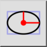
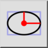
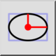
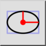

Elipse con radios
Barra de herramienta / icono:
 

Menú: Dibujar > Elipse > Elipse con radios
Acceso directo: E, I
Comandos: ellipseradii | ei
Esta es una traducción automática.
Barra de herramienta / icono:
 

Menú: Dibujar > Elipse > Elipse con radios
Acceso directo: E, I
Comandos: ellipseradii | ei
Dibuja elipses con radios mayores y menores dados.